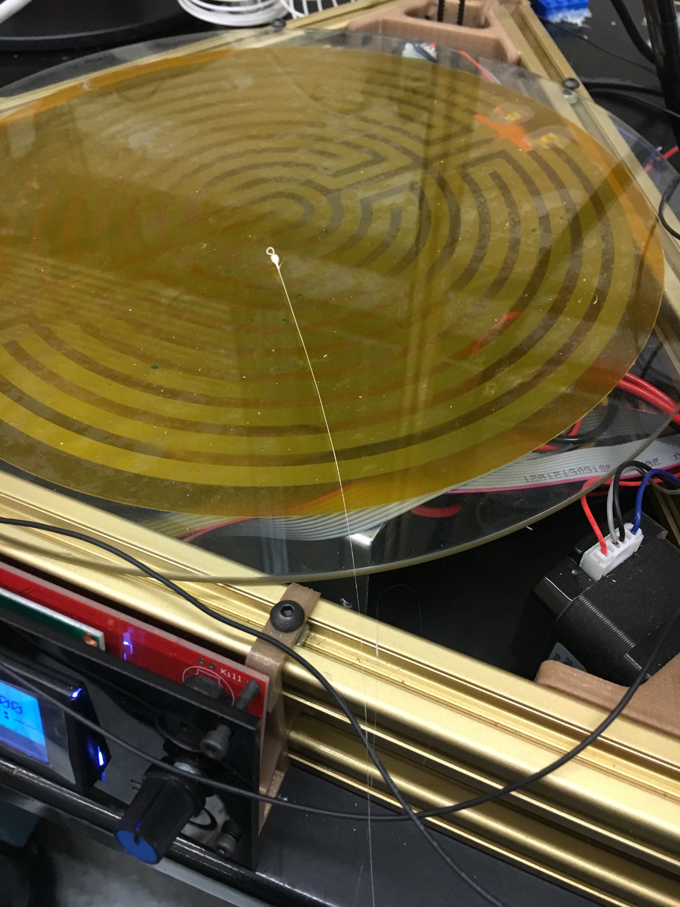

Kossel XL
Personal Project

Kossel Xl
The Long, Long Journey
After finding that my printrbot's build volume was too small for my applications, I decided to uprage. I looked at most open source printer designs and had read that Delta bots were extremely accurate. Additionally, they have great build volume when considering the height many can reach. I opted for a Kossel XL, a printer with a 270mm build radius and 310mm build height.
Building this printer took about two days. The reason for this is it is very difficult to fit some of the screws inside of the aluminum, and if a piece is missed, the entire structure must be taken apart and rebuilt- something that happened many times as the instructions were solely in chinese in grainy video. Beyond this, there are many wires that mus be dealt with and routed, something that takes equally as long. While these both seemed as though it could all be done in a number of hours, it truly took a number of days. Connecting the board up and determining which direction all the pins goes also took quite a while. Then the board had to be flashed with unique firmware, only to discover that the firmware did not work, there are driver issues, and so on.
At this point, it was clear I should have gone with a typical XYZ printer. The solutions and documentation out there for an XYZ printer are much greater than delta bots. Additionally, they are just easier to manage and everything is more straightforward. There are no struts to calculate the distances, you are more likely to have a level print by simply lowering your printer down to the bed. With a delta, this is not as straight forward; it is not alwasy clear whether it is working correctly based on the movement of a motor.
More Problems
The biggest problem I have with deltabots is their extruder design. The design they begin with is a push extruder design with the extruder at the top of the bot. The filament flows through filament tubing all the way to the extruder, which for my Kossel Xl is nearly a meter. Despite being coated in teflon, PTFE tubing can have a lot of friction, especially if it is long or gets bent even once. The extruder has given me lots of problems because as any 3d printing enthusiast knows, not having a clear extrudign head can lead to major problems such as buildup in the exruding head. In the case of kossels and others, it leads to the filament being ground by the extruding motor due to the fact that the filament has nowhere to go, but continue to have some sort of mechanism building friction on its edge as it tries to force it along the PTFE tubing. In looking into my problem, I tried a different extruder with more strength when I thought my PTFE tubing was fine and frictionless, but now I have switched towards the PTFE, and getting a perfect tube.
A Small Victory
The new extruder motor setup I bought worked wonders, but there was still a lot of friction due to the tubing. The printer was able to extrude a small amount before building up material in the hot end, leading to me breaking the nozzle when cleaning it out.
Success (Hopefully)
With new nozzles and tubing on the way, I am excited to see my printer working. I still have to get it running on my computer as it seems my computer has driver errors while one of my friend's does not. I am hoping that the push design starts to work with my new tube, but if it does not, I will switch towards a new design with a pull motor that I will design myself.